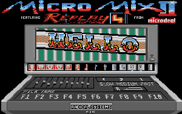
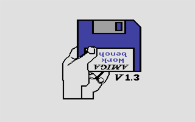

Une des premières DENTRO des Replicants, le jeu cracké s'appelait
ARKANOID II.
Le fichier de la démo
[22 Ko] (zip)
Après
l'éntrée des Replicants dans The Union, voici l'une de leurs meilleurs
DENTRO avec FUZION (STE uniquement)
Le fichier de la démo [53
Ko] (zip)
La démo de Snowman de D'vid,
il faut 1 Mo de mémoire vive pour visualiser se chef d'oeuvre !
Image zippée de la démo
au format MSA [654 Ko]
Une démo 'FullScreen' : The walker de Xenex,
puissance de l'Amiga sur un Atari.
Le fichier de la démo sur
ST [102 Ko]
Vous connaissez sûrement les 2 démos pour STF les plus connues
utilisant des samples de très bonne qualité : MICROMIX.

Je vous propose une version 'remixée' par Tiger 1
Image au format MSA [537 Ko] (ZIP)

Un émulateur
Amiga sur Atari, vrai ou faux ? Essayer-le !!!
Fichiers compréssés
au format ZIP [21 ko]

[ Divers | Demos | Dentros | Mags | Trackers | Players | Utils ]